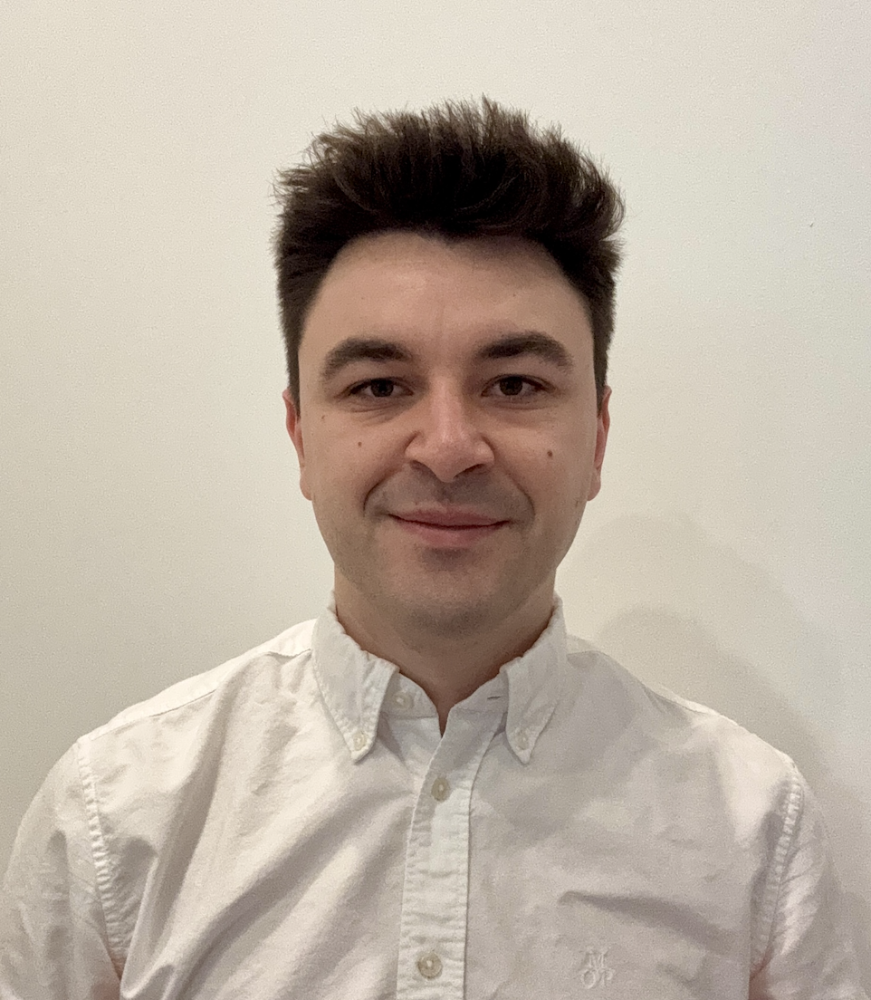

|
Mateusz Jaszczuk
I am a Master's student in Mechanical Engineering at the GRASP Lab, University of Pennsylvania, advised by Prof. Nadia Figueroa.
My research focuses on enabling soft and safe physical Human-Robot Inetractions (pHRI), allowing robots to be deployed in human-centric, unstructured, and continuously evolving environments.
Prior to Penn, I received my B.S. in Aeronautical and Astronautical Engineering from Purdue University.
|

|